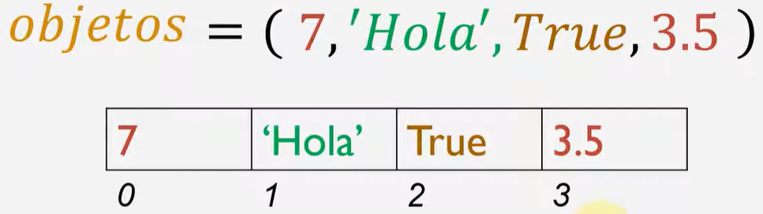

9. Tipus avançats
A més de les llistes que ja hem vist, Python ofereix altres tipus avançats de dades que vorem a contianució.
9.1 Tuples
Les tuples són unes col.lecions de dades com les llistes però, una vegada declarades, no es poden modificar → immutables
Característiques
- Els seus elements van declarats entre parèntesis
( ), a diferència que les llistes, on es declaren entre[ ] - Són ordenades
- Suporten indexació i slicing (igual que fem amb les llistes)
- No es poden afegir o eliminar elements (inmutables)
- Es poden niar → una tupla pot contenir altres tuples

mesosAny = ("Gen", "Feb", "Mar", "Abr", "Mai", "Jun", "Jul", "Ago", "Set", "Oct", "Nov", "Des")
print(mesosAny[1]) # accés al segon element
print(mesosAny[-1]) # accés a l'últim element
print(mesosAny[:3]) # slicing
print(mesosAny[:10:2]) # slicing
mesosAny[0] = 8 # ERROR, no podem modificar
Feb
Des
('Gen', 'Feb', 'Mar')
('Gen', 'Mar', 'Mai', 'Jul', 'Set')
TypeError: 'tuple' object does not support item assignment
Operacions bàsiques amb tuples
Les llistes i les tuples compartixen gran part d'aquestes operacions bàsiques: concatenació, repetició ...
tupla1 = (-5, 23, 8, 11, -45, 23, 13, -7)
tupla2 = (6,) # tupla d'un sol element, cal posar la coma!
print(tupla2)
tupla3 = tupla1 + tupla2 # concatenar tuples
print(tupla3)
print(tupla2 * 3) # repetir la tupla 3 vegades
print("Mai" in mesosAny) # retorna True
(6,)
(-5, 23, 8, 11, -45, 23, 13, -7, 6)
(6, 6, 6)
True
Igualment, la majoria dels mètodes propis de les llistes també estan disponibles per a les tuples. Per exemple podem destacar:
- len(): retorna el tamany de la tupla
- max() min() sum(): només per a tuples amb elements compatibles
- tupla.count(element): compta el nombre de vegades que un determinat element està en la tupla
- tupla.index(element): retorna la posició de l'element dins la tupla, el primer que trobe
- tupla.index(element, posicio): retorna la posició de l'element dins la tupla, a partir d'una determinada posició
print(len(tupla3)) # nombre d'elements
print(max(tupla3)) # si els valors són compatibles
print(min(tupla3)) # si els valors són compatibles
print(sum(tupla3)) # si els valors són compatibles
tupla4 = (4, 2, 'u', 'ww', 2, -5)
print(sum(tupla4)) # ERROR, no podem sumar
print(tupla1.count(23)) # comptar ocurrències
print(tupla1.index(23)) # posició d'un valor
print(tupla1.index(23, 3)) # a partir de la posició 3
9
23
-45
27
TypeError: unsupported operand type(s) for +: 'int' and 'str'
2
1
5
Conversions, desempaquetat i recorregut
Podem convertir llistes a tuples utilitzant el mètode tuple() i fer-ho al contrari amb el mètode list().
llista = ["poma", "plàtan", "cirera"]
fruites = tuple(llista) # convertir una llista en tupla
llista_ordenada = sorted(fruites) # retorna una llista ordenada
nova_llista = list(fruites) # convertir una tupla en llista
print(fruites)
print(llista_ordenada)
print(nova_llista)
('poma', 'plàtan', 'cirera')
['cirera', 'plàtan', 'poma']
['poma', 'plàtan', 'cirera']
El desempaquetat és l'utilitat de Pyhton que permet extraure el contingut d'una tupla a diferents variables en una sola comanda. Si el nombre de variables a l'esquerra de l'assignació no es correspon amb el nombre d'elements de la tupla, obtindrem un error ValueError: too many values to unpack.
a, b, c = fruites # desempaquetat
print(b) # --> plàtan
Per a recòrrer una tupla i gestionar el seu contingut, ho podem fer com amb qualsevol element iterable: p.e. amb bucles for.
for t in fruites: print(t) # recorregut de la tupla
for i in range(len(fruites)):
print(str(i+1)+ ' - ' + fruites[i]) # i varia de 0 a len(fruites)
poma
plàtan
cirera
1 - poma
2 - plàtan
3 - cirera
Mutabilitat dels elements
Havem explicat al principi que les tuples són inmutables, però els elements que contenen sí que poden ser mutables. És a dir, que podríem dir que les tuples són mutables i immutables a la vegada.
Per exemple, una llista dins d'una tupla sí que pot canviar:
tupla = (-5, 23, 8, llista, -45, 23, 13, -7)
print(tupla)
tupla[3][1] = 'taronja'
print(tupla)
(-5, 23, 8, ['poma', 'plàtan', 'cirera'], -45, 23, 13, -7)
(-5, 23, 8, ['poma', 'taronja', 'cirera'], -45, 23, 13, -7)
Quan usar tuples en lloc de llistes?
- Quan les dades no han de canviar. Exemple: coordenades, dies de la setmana
- Quan es busca més eficiència. Les tuples consumeixen menys memòria i són més ràpides
- Quan es necessiten dades hashables. Per exemple les tuples es poden usar com a claus en diccionaris (vorem més endavant el que és), les llistes no
9.2 Sets (conjunts)
Els sets són també una col.leció de dades com les llistes i les tuples, però amb unes particularitats que vorem a continuació.
Característiques
- Els seus elements van declarats entre claus
{ } - Elements únics: en un set no pot haver-hi duplicats
- No ordenats: els elements no tenen un ordre específic dins el set
- Mutables: es poden afegir o eliminar elements
- Els elements que conté han de ser immutables: podem afegir o llevar elements, però no modificar un element concret (p.e. no pot incloure llistes, ja que aquestes són mutables)
conjunt_buit = set()
coses = {'a', 1, 2, 2, 3, 'vd', 'a', -5} # Elimina duplicats
print(coses)
conjunt = set([1, 2, 3, 3]) # Convertir una llista en conjunt
print(conjunt)
{1, 2, 'a', 3, -5, 'vd'}
{1, 2, 3}
Com que els elements no tenen una posició específica, quan s'imprimeix un set o s'itera sobre ell, l'ordre dels elements mostrat pot ser diferent del que es va utilitzar en crear-lo.
Dos execucions de print(coses) poden mostrar els elements en un ordre diferent:
{'vd', 1, 2, 3, -5, 'a'}
{1, 2, 3, 'vd', -5, 'a'}
Modificació de sets
Com que els sets no estan ordenats, no podem indexar els seus elements com ho fem amb les llistes per a modificar-los llista[3] = 44. Per a gestionar el conjunts disposem de mètodes propis, entre els que podem destacar:
conjunt.add(element): afegeix unelemental setconjunt.update([e1,e2,e3...]): afegir elements d'una llista "un a un" (cada element de la llista en una nova posició del set)conjunt.remove(element): elimina l'elementreferenciat. Dona error si l'elementno existeix dins el conjunt.conjunt.discard(element): elimina l'elementreferenciat, però en aquest cas no dona error si no existeix
conjunt.add(4) # afegix el nombre 4
conjunt.add((5, 'e', 6)) # afegix la tupla (5, 'e', 6)
print(conjunt)
conjunt.update([3,'w',7,8]) # afegix elements d'una llista
# El 3 no s'afegix perque ja existeix en el conjunt
print(conjunt)
conjunt.remove(2) # elimina el 2
conjunt.discard('w') # elimina la 'w'
conjunt.discard('paco') # no dona error
print(conjunt)
{1, 2, 3, 4, (5, 'e', 6)}
{1, 2, 3, 4, (5, 'e', 6), 7, 8, 'w'}
{1, 3, 4, (5, 'e', 6), 7, 8}
Com recórrer un set?
Exactament igual que es fa amb les llistes i les tuples.
conjunt = {1, 2.5, "hola", (1, 2)}
for element in conjunt:
print(element)
1
2.5
(1, 2)
hola
Recorda que, al ser una col.lecció no ordenada, quan recorrem un set podem obtindre els resultats en un ordre diferent en cada execució. Fes la prova amb el codi anterior i voràs com cada vegada el for mostra els elements en un ordre diferent.
Exercici amb tuples i sets
Una biblioteca escolar vol gestionar els llibres i els socis.
Cada llibre es guarda com una tupla (títol, autor, any):
llibre1 = ("Mirall trencat", "Mercè Rodoreda", 1974)
llibre2 = ("La plaça del Diamant", "Mercè Rodoreda", 1962)
llibre3 = ("Solitud", "Víctor Català", 1905)
- Mostra el títol de
llibre1accedint-hi per la posició - Mostra l’últim element de
llibre3utilitzant un índex negatiu - Fes un desempaquetat de
llibre2en tres variablestitol, autor, anyi imprimeix: "La plaça del Diamant va ser escrit per Mercè Rodoreda el 1962" - Crea una llista amb els tres llibres i ordena-la per llibre
Dos grups de socis han fet préstecs aquesta setmana:
grup_a = {"Marta", "Pau", "Anna", "Joan", "Laia"}
grup_b = {"Pau", "Laia", "Jordi", "Núria", "Marc"}
- Afegeix "Clara" al
grup_ai elimina "Joan" - Comprova si "Marc" és al
grup_b - Intenta eliminar "Àngel" del
grup_bsense que et done error
Solució:
# Part 1
print(llibre1[0])
print(llibre3[-1])
titol, autor, any = llibre2
print(f"{titol} va ser escrit per {autor} el {any}")
llibres = [llibre1, llibre2, llibre3]
print(sorted(llibres))
# Part 2
grup_a.add("Clara")
grup_a.remove("Joan")
print("Marc" in grup_b)
grup_b.discard("Àngel")
9.3 Diccionaris
Un diccionari és una col.lecció de dades que guarda la informació en parelles clau → valor. En lloc d’accedir al valor d'un element per la seva posició (com en una llista), hi accedixes per la seva clau.

Característiques
- Els seus elements van declarats entre claus
{ }, separant els elements amb comes, - Cada element està format per una parella
clau : valor - Són mutables
- No permeten claus duplicades
- Si s'afegix una clau repetida, el seu valor serà sobreescrit
- Les claus han de ser immutables
- Poden ser
str,int,tuple, però nolistodict. - En el cap valor es pot guardar qualsevol tipus de dades (mutables o immutables)
- Els seus elements
clau : valormantenen l'ordre d'inserció
Exemple
dic = {} # Diccionari buit
persona = {"nom": "Carlos",
"edat": 30,
"ciutat": "Madrid"}
print(persona)
print(persona["nom"]) # Accedeix al valor d'una clau.
{'nom': 'Carlos', 'edat': 30, 'ciutat': 'Madrid'}
Carlos
Modificació / accés a diccionaris
Podem afegir noves parelles clau/valor utilitzant la nomenclatura diccionari[clau] = valor.
Si una clau ja existeix, la modificarà.
El mètode diccionari.update({ }) ens permet afegir/modificar vàries parelles clau/valor a la vegada.
dic = {} # Diccionari buit
dic["ies"] = "teulada" # Afegir una nova clau
dic["provincia"] = "alacant"
dic["provincia"] = "california" # Modificar el valor d'una clau existent
dic.update({"telefon": 965739045, "estudis": ['ESO', 'BAT', 'FP']})
print(dic)
nom = dic["ies"] # Accedir a un valor (error si no existeix)
print(nom)
{'ies': 'teulada', 'provincia': 'california', 'telefon': 965739045, 'estudis': ['ESO', 'BAT', 'FP']}
teulada
Podem eliminar elements d'un diccionari de vàries formes:
- del diccionari[clau]: Elimina una clau i el seu valor
- diccionari.pop[clau]: Retorna el valor de la clau i després elimina l'element
- diccionari.clear(): Buida el diccionari
del dic["provincia"]
print(dic)
estudis = dic.pop("estudis")
print(dic)
print(estudis)
dic.clear()
print(dic)
{'ies': 'teulada', 'telefon': 965739045, 'estudis': ['ESO', 'BAT', 'FP']}
{'ies': 'teulada', 'telefon': 965739045}
['ESO', 'BAT', 'FP']
{}
Mètodes particulars i iteracions de diccionaris
Donada la particular estructura dels diccionaris, aquests disposen d'una sèrie de mètodes propis que ens ajuden a gestionar les dades emmagatzemades en ells.
- diccionari.keys(): Retorna un objecte de tipus dict_keys (no una llista , string, tupla ...). Aquest objecte conté totes les claus del diccionari
- diccionari.values(): Retorna un objecte de tipus dict_valuesque conté tots els valors del diccionari
- diccionari.items(): Retorna un objecte de tipus dict_itemsque conté totes les parelles (clau,valor)
Si fem un print() d'aquestos objectes propis dels diccionaris vorem que no se'ns mostren com una llista, fet que ens ha de fer pensar que no podem tractar-los d'igual forma.
persona = {"nom": "Carlos",
"edat": 30,
"ciutat": "Madrid"}
claus = persona.keys() # objecte dict_keys
print(claus)
valors = persona.values() # objecte dict_values
print(valors)
items = persona.items() # objecte dict_items
print(items)
dict_keys(['nom', 'edat', 'ciutat'])
dict_values(['Carlos', 30, 'Madrid'])
dict_items([('nom', 'Carlos'), ('edat', 30), ('ciutat', 'Madrid')])
Els objectes retornats pels mètodes .keys(), .values() i .items() podem utilitzar-los, per exemple, per a iterar sobre els diccionaris (recórrer-los).
for clau in persona.keys():
print(clau)
for valor in persona.values():
print(valor)
for clau, valor in persona.items():
print(clau, valor)
nom
edat
ciutat
Carlos
30
Madrid
nom Carlos
edat 30
ciutat Madrid
Podem simplificar el for si el que volem és iterar sobre les claus (serà el més habitual). Si es pasa directament el diccionari al bucle for, aquest iterarà sobre les seues claus.
print('Les parelles clau/valor són:')
for clau in persona:
print(clau, ' --> ', persona[clau])
Les parelles clau/valor són:
nom --> Carlos
edat --> 30
ciutat --> Madrid
Per tant, for clau in persona.keys(): és equivalent a for clau in persona:.
Operacions agregades (in, len, max, min, sum)
Les operacions agregades de Python poden utilitzar-se sobre els diccionaris. Moltes d'aquestes operacions treballen per defecte sobre les claus (max, min, sum). Si el que es vol és treballar amb els valors, s'ha d'utilitzar .values().
edats = {"Anna": 20,
"Pere": 25,
"Joan": 18 }
print(max(edats)) # "Pere"
print(max(edats.values())) # 25
print(min(edats.values())) # 18
print(sum(edats.values())) # 63
"Pere" in edats # True → busca entre les claus
25 in edats # False → NO busca entre els valors
25 in edats.values() # True → busca entre els valors
Exercici pràctic:
Fes ara l'exercici sobre diccionaris "La base de dades de la Rebel·lió 🌌"

9.4 Python comprehension (Comprensió)
La comprensió de Python és una manera concisa i eficient de crear col.leccions a partir d'iterables, modificant i/o filtrant el seu contingut.
resultat = [expressió for element in iterable if condició]
expressió: operació o transformació aplicada a cada elementelement: variable que pren els valors de l'iterable en cada iteracióiterable: objecte iterable (llista, tupla, rang, set, etc.)condició(opcional): filtra els elements
Exemples
Crear una llista de quadrats a partir d'un rang de nombres.
quadrats = [x**2 for x in range(10)]
print(quadrats) # Llista
[0, 1, 4, 9, 16, 25, 36, 49, 64, 81]
Filtrar els nombres parells d'un set i guardar-los en una llista.
nombres = {0, 21, 44, 8, 7, 13, 50, 4, 16, 23, 12, 9} # Set
parells = [x for x in nombres if x % 2 == 0]
print(parells) # Llista
[0, 4, 8, 44, 12, 16, 50]
Convertir les paraules d'una tupla a majúscules i guardar-les en una llista. Fer després el mateix però guardant-les en un set, on s'eliminen duplicats i els elements queden desordenats.
paraules = ("hola", "món", "hola", "python") # Tupla
majuscules = [paraula.upper() for paraula in paraules]
print(majuscules) # Llista
majuscules = {paraula.upper() for paraula in paraules}
print(majuscules) # Set
['HOLA', 'MÓN', 'HOLA', 'PYTHON']
{'MÓN', 'PYTHON', 'HOLA'}
Exercicis sobre Python comprehension
1. Primers passos
A partir de la següent llista:
nombres = [1, 2, 3, 4, 5, 6, 7, 8, 9, 10]
- Crea una llista amb el doble dels nombres senars
- Crea una llista amb els nombres més grans que 5
- Reescriu amb una list comprehension aquest bucle for:
resultat = []
for n in nombres:
resultat.append(n + 10)
Solució
print([n * 2 for n in nombres if n % 2 != 0])
print([n for n in nombres if n > 5])
print([n + 10 for n in nombres])
2. Treballant amb text
A partir de la següent llista:
noms = ["marta", "pau", "anna", "joan", "laia", "jordi"]
- Crea una llista amb els noms en majúscules
- Crea una llista amb la longitud de cada nom
- Crea una llista amb els noms que tenen més de 4 lletres
- Crea una llista amb la primera lletra de cada nom, en majúscula (["M", "P", ...])
Solució
print([nom.upper() for nom in noms])
print([len(nom) for nom in noms])
print([nom for nom in noms if len(nom) > 4])
print([nom[0].upper() for nom in noms])
3. Productes de la botiga
Una botiga en línia vol processar les seves dades. Cada producte és una tupla (nom, preu, estoc) dins la llista productes:
productes = [
("Teclat", 25.0, 10),
("Ratolí", 12.5, 0),
("Monitor", 150.0, 4),
("Auriculars", 40.0, 0),
("Webcam", 30.0, 7),
]
- Crea una llista amb només els noms dels productes
- Crea una llista amb els noms dels productes disponibles (estoc > 0).
- Crea una llista amb els preus amb un 21 % d’IVA afegit, arrodonits a 2 decimals (round()).
- Crea una llista amb els noms dels productes que costen menys de 35 €.
- Crea una llista de cadenes amb el format "Teclat: 25.0 €" per a cada producte
PISTA: Utilitza el desempaquetat de les tuples dins el for per a obtenir els 3 conceptes de cada producte per separat for nom, preu, estoc in productes.
Solució
print([nom for nom, preu, estoc in productes])
print([nom for nom, preu, estoc in productes if estoc > 0])
print([round(preu * 1.21, 2) for nom, preu, estoc in productes])
print([nom for nom, preu, estoc in productes if preu < 35])
print([f"{nom}: {preu} €" for nom, preu, estoc in productes])